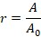

|
理论
|
在声学（AC）模式（也称为轻敲模式）中，悬臂梁以其共振频率以自由幅度 A0 振荡。当悬臂梁接近表面时，振荡幅度被衰减到值 A，该值取决于到表面的距离（另见图1中的蓝色曲线）。比值

定义了探针与表面接触时幅度的衰减，并与施加的力成正比。通过保持幅度衰减恒定，可以对表面形貌进行成像。探针与样品之间的相互作用主要是垂直的，而横向力几乎可以忽略不计。因此，AC模式AFM不会出现接触模式AFM中观察到的探针或样品退化效应，因此是一种适合对柔软样品进行成像的技术。
相位图像可以与表面形貌同时记录。在该图像中，记录了自由振荡与探针与表面接触时振荡之间的相位偏移。由于相位偏移取决于样品的粘弹性性质以及样品与探针之间的粘附势，因此相位图像勾勒出不同材料性质的区域，而不描述这些性质本身。尽管如此，相位图像通常用于以高分辨率表征柔软样品。